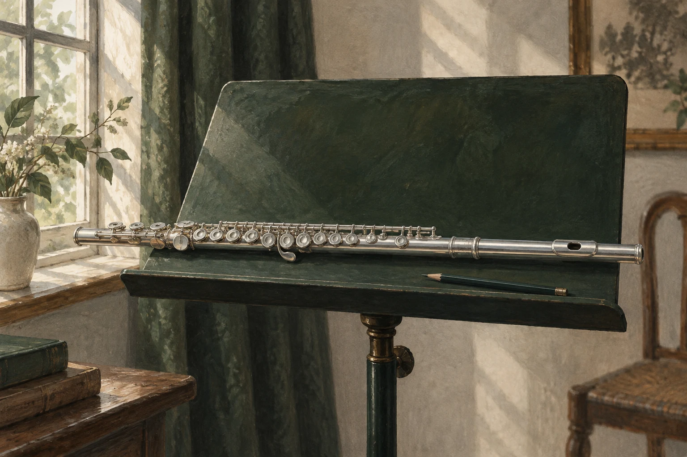

長笛手指要練得清楚，先聽換音的接縫，別只看手指多快。抽出最容易夾雜音的兩個音慢練，找出哪根手指早到或遲到，再用節拍器分組，接回原來的節奏。

慢慢聽一段錄音，兩個正確的音之間竟夾着一個很短的雜音。把音群吹得更快，那個雜音只會藏起來。
速度不是愈快愈好
學生常以為自己只是手指慢，很多時是拍點不清楚，一加速就把錯誤藏起來。快練會掩蓋按鍵不齊和節奏不準。
問題既然出現在一小句裏，練習範圍也留在這一句。整段重吹只會把它再藏一次，在譜上圈出那一處，下次直接回到這裏。
用慢速和分組檢查這一小句的拍點，看手指有沒有趕在拍子前面。慢速都不齊的話，加速只會把它蓋起來。
保持手形自然，減少不必要的高抬動作。手指靠近按鍵，但不必僵硬壓住，要留有活動的餘地。
換指接縫裏的雜聲從哪裏來？
先確認兩個音的指法，把前後的裝飾和節奏變化暫時拿開。只有兩個音，眼睛、耳朵和手指較易互相對照。
不吹奏也可以觀察。用自然手型輕輕交替按鍵，看有沒有手指提得特別高，或者為了按下一個鍵而扭動整隻手。動作多，不一定可靠。
然後把最容易不齊的兩音寫成四次交替，速度慢到每次接縫都聽得見。
先連奏，再加入原譜的吐音，分清是手指不同步，還是起音和換指錯開。
加入氣流後，每個音吹長一點，專心聽交界。接縫清楚了，才逐步縮短音長。有些換指要多根手指同步，這時要練一起到達，別讓手指輪流用力。
由低音到高音練過，再反過來。兩個方向的難度可能不同，一邊順利不算完成。也可以把重音移到第二個音，看動作會不會因注意力改變而變形。
分組慢練怎樣接回樂句？
用節拍器把一串音分成小組，每組的第一個音落在拍點上。再把重音移到組內另一個音，手指靠慣性滑過去的地方便會露出來。
然後慢速錄音，比較改動前後兩段，找出有效的那一步，下次從那一步做起。
練好兩音後，由前一拍開始接回，再加上後一拍，像替接縫重新縫好兩邊的布。這樣孤立動作才不會和樂句脫節。
- 孤立時清楚，回到原句便亂：再練進入難點的那一下
- 三四個音都清楚：才慢慢恢復原來速度
- 慢速仍不齊：退回兩個音
練到後來，聽者只聽見旋律，聽不見你在處理機關。手指看起來忙不忙，並非重點。
常見問題
長笛快段糊成一團，要多練幾遍嗎？
先別整段重練。圈出第一個走樣的位置，抽出兩個音慢練，再用節拍器分組。
手指要貼着按鍵嗎？
靠近按鍵就好，減少高抬，但不要為了貼鍵而僵住手指。
甚麼時候才可以加速？
慢速時拍點清楚、接縫乾淨，三四個音接回原句仍然清楚，才慢慢加。